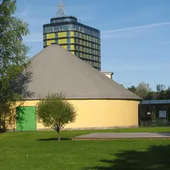
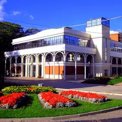
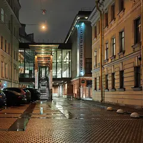
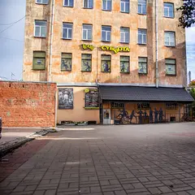
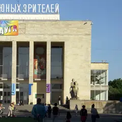

Подборку собрали 11 ноября, прошедшие события скрыты. Свежая афиша — на главной
Места по типу · данные на 11 ноября
Театры Петербурга
25 театров в каталоге — драма, опера и балет, кукольные и гастротеатры, где ужин совмещён со спектаклем, например «Театр им. Ленсовета», «Александринский театр» и «Мариинский театр — историческая сцена». В афише — 30 спектаклей на ближайшие недели с датами и ссылками на официальные кассы. Билеты на премьеры уходят быстро, поэтому зови заранее.
- 25 мест
- 12 планов
- 4 района
Театры 25
Владимирский пр., 12
Новое
Живой репертуарный театр у Владимирской: яркие режиссёрские спектакли и сильная труппа.
Подробнее и маршрут: Театр им. ЛенсоветаПозвать сюда: Театр им. Ленсовета
Фото: Дарья Пичугина, CC BY-SA 2.5 · Wikimedia Commons
площадь Островского, 6
Новое
Старейший драмтеатр России в здании Росси: классика в новой режиссуре и зал с ложами в золоте.
Подробнее и маршрут: Александринский театрПозвать сюда: Александринский театр
Фото: Bene Riobó, CC BY-SA 4.0 · Wikimedia Commons
Театральная площадь, 1
Новое
Бирюзово-золотой зал, где идут «Жизель» и «Лебединое озеро» — главный повод нарядиться в Петербурге.
Подробнее и маршрут: Мариинский театр — историческая сценаПозвать сюда: Мариинский театр — историческая сцена
Фото: Jaimrsilva, CC BY-SA 4.0 · Wikimedia Commons
ул. Декабристов, 34
Новое
Новая сцена Мариинского с отличной акустикой и большой афишей оперы и балета.
Подробнее и маршрут: Мариинский-2Позвать сюда: Мариинский-2
Фото: randreu, CC BY 3.0 · Wikimedia Commons
площадь Искусств, 1
Новое
Уютный бело-красный зал на площади Искусств: балет и опера, а билеты достать проще, чем в Мариинку.
Подробнее и маршрут: Михайловский театрПозвать сюда: Михайловский театр
Фото: A.Savin, CC BY-SA 3.0 · Wikimedia Commons
Невский пр., 56
Новое
Комедии и лёгкие спектакли в доме Елисеевых на Невском — хороший вариант для первого похода в театр.
Подробнее и маршрут: Театр Комедии им. АкимоваПозвать сюда: Театр Комедии им. Акимова
Фото: Florstein, CC BY-SA 4.0 · Wikimedia Commons
Итальянская ул., 13
Новое
Мюзиклы и оперетта в нарядном зале на Итальянской — для тех, кто хочет музыки и шоу.
Подробнее и маршрут: Театр музыкальной комедииПозвать сюда: Театр музыкальной комедии
Фото: Книжная пыль, CC BY-SA 4.0 · Wikimedia Commons

Свердловская наб., 44Ю
Новое
Цирк-шапито с социальной миссией: современный цирк, клоунада и спектакли для взрослых.
Подробнее и маршрут: Упсала-ЦиркПозвать сюда: Упсала-Цирк
Фото: Екатерина Борисова, CC BY-SA 4.0 · Wikimedia Commons
наб. реки Фонтанки, 3
Новое
Старейший каменный цирк России: большие программы с акробатами и животными в историческом здании.
Подробнее и маршрут: Цирк на ФонтанкеПозвать сюда: Цирк на Фонтанке
Фото: Никонико962, CC BY-SA 4.0 · Wikimedia Commons
наб. реки Фонтанки, 65
Новое
Один из главных драматических театров страны: смелые постановки и роскошный исторический зал.
Подробнее и маршрут: БДТ им. ТовстоноговаПозвать сюда: БДТ им. Товстоногова
Фото: GAlexandrova, CC BY-SA 4.0 · Wikimedia Commons

наб. реки Фонтанки, 114
Новое
Тёплый театр у Фонтанки с душевными спектаклями и преданной публикой.
Подробнее и маршрут: Молодёжный театр на ФонтанкеПозвать сюда: Молодёжный театр на Фонтанке
Фото: GAlexandrova, CC BY-SA 4.0 · Wikimedia Commons

наб. реки Фонтанки, 49А
Новое
Медиацентр со спектаклями, лекциями, кино и крышей; площадка для экспериментального театра.
Подробнее и маршрут: Новая сцена Александринского театраПозвать сюда: Новая сцена Александринского театра
Фото: Anastasiya Lvova, CC BY-SA 4.0 · Wikimedia Commons
ул. Рубинштейна, 13
Новое
Детский музыкальный театр на Рубинштейна, где взрослым тоже интересно: опера и мюзиклы.
Подробнее и маршрут: Театр «Зазеркалье»Позвать сюда: Театр «Зазеркалье»
Фото: НКТ, CC BY-SA 3.0 · Wikimedia Commons
Народная ул., 1
Новое
Театр Григория Козлова: многочасовые спектакли по классике, которые зрители смотрят на одном дыхании.
Подробнее и маршрут: Театр «Мастерская»Позвать сюда: Театр «Мастерская»
Фото: Sergey, CC BY-SA 4.0 · Wikimedia Commons
Литейный пр., 51
Новое
Камерный драмтеатр в центре: современная драматургия и классика без пафоса.
Подробнее и маршрут: Театр «На Литейном»Позвать сюда: Театр «На Литейном»
Фото: Thomon, CC BY-SA 4.0 · Wikimedia Commons

Звенигородская ул., 30
Новое
Камерный театр у Пушкинской с тёплой атмосферой и доступными билетами.
Подробнее и маршрут: Театр «Суббота»Позвать сюда: Театр «Суббота»
Фото: Theatre Subbota, CC BY-SA 4.0 · Wikimedia Commons
Большая Пушкарская ул., 14Б
Новое
Новая сцена на Петроградке для балетов Эйфмана и выступлений его академии.
Подробнее и маршрут: Театр Академии танца Бориса ЭйфманаПозвать сюда: Театр Академии танца Бориса Эйфмана
Фото: Viktorinkalexeeva, CC BY-SA 4.0 · Wikimedia Commons

Пионерская площадь, 1
Новое
Большой театр на Пионерской площади, где для взрослых идут одни из самых обсуждаемых спектаклей города.
Подробнее и маршрут: ТЮЗ им. БрянцеваПозвать сюда: ТЮЗ им. Брянцева
Фото: George Shuklin, общественное достояние · Wikimedia Commons
ул. Рубинштейна, 18/5
Новое
Театр Льва Додина: глубокие спектакли по русской классике; после — бары на Рубинштейна в двух шагах.
Подробнее и маршрут: МДТ — Театр ЕвропыПозвать сюда: МДТ — Театр Европы
Галерная ул., 33
Новое
Камерная опера в особняке барона Дервиза: маленький зал, близко к сцене, необычные постановки.
Подробнее и маршрут: «Санктъ-Петербургъ Опера»Позвать сюда: «Санктъ-Петербургъ Опера»
Садовая ул., 27
Новое
Небольшой театр на Садовой с камерным залом и сильными спектаклями молодых режиссёров.
Подробнее и маршрут: Приют комедиантаПозвать сюда: Приют комедианта
ул. Профессора Попова, 29
Новое
Маленький независимый театр на Петроградке с экспериментальными спектаклями.
Подробнее и маршрут: Театр «Особняк»Позвать сюда: Театр «Особняк»
Итальянская ул., 21
Новое
Исторический драмтеатр в Пассаже на Итальянской: классика и комедии в уютном зале.
Подробнее и маршрут: Театр им. КомиссаржевскойПозвать сюда: Театр им. Комиссаржевской
Большая Конюшенная ул., 27
Новое
Камерная сцена у Невского: эстрадные и музыкальные спектакли, вечера юмора.
Подробнее и маршрут: Театр эстрады им. РайкинаПозвать сюда: Театр эстрады им. Райкина
Александровский парк, 4Т
Новое
Большой театр в Александровском парке: гастроли, фестивали и собственные постановки.
Подробнее и маршрут: Театр-фестиваль «Балтийский дом»Позвать сюда: Театр-фестиваль «Балтийский дом»


Готовые планы с этими местами 12
- Александринский театр · Театр · м. Гостиный двор
- 5 минут пешкомOy! · Коктейльный бар
Классика в новой режиссуре и ложи в золоте старейшего драмтеатра, а потом 5 минут пешком — мартини-бар с устрицами.
Открыть план: Александринка и мартини с устрицамиПозвать сюда: Александринка и мартини с устрицами
Фото: Bene Riobó, CC BY-SA 4.0 · Wikimedia Commons
- Мариинский театр — историческая сцена · Театр оперы и балета · м. Садовая
- 10 минут пешкомKuznya House · Ресторан
Бирюзово-золотой зал и «Жизель» — главный повод нарядиться, а после спектакля 10 минут пешком до Новой Голландии на поздний ужин в старой кузнице.
Открыть план: Балет в Мариинском и ужин на островеПозвать сюда: Балет в Мариинском и ужин на острове
Фото: Jaimrsilva, CC BY-SA 4.0 · Wikimedia Commons
- Мариинский-2 · Театр оперы и балета · м. Садовая
- 10 минут пешкомKuznya House · Ресторан
Опера или балет на новой сцене с отличной акустикой, а потом 10 минут пешком до Новой Голландии — ужин в старой кузнице, позже там играют диджеи.
Открыть план: Мариинский-2 и ужин в кузницеПозвать сюда: Мариинский-2 и ужин в кузнице
Фото: randreu, CC BY 3.0 · Wikimedia Commons
- Михайловский театр · Театр оперы и балета · м. Невский проспект
- 7 минут пешкомChang · Азиатское бистро
Балет в уютном бело-красном зале на площади Искусств — билеты достать проще, чем в Мариинку, — а после 7 минут пешком до зелёного зала Chang.
Открыть план: Михайловский театр и азиатское бистроПозвать сюда: Михайловский театр и азиатское бистро
Фото: A.Savin, CC BY-SA 3.0 · Wikimedia Commons
- Театр музыкальной комедии · Театр · м. Гостиный двор
- 8 минут пешкомМама Тата · Кафе
Мюзикл или оперетта в нарядном зале Театра музыкальной комедии, а потом 8 минут пешком — хачапури и сытные салаты в «Маме Тате».
Открыть план: Мюзикл на Итальянской и домашняя кухняПозвать сюда: Мюзикл на Итальянской и домашняя кухня
Фото: Книжная пыль, CC BY-SA 4.0 · Wikimedia Commons
- Театр им. Ленсовета · Театр · м. Достоевская
- 2 минуты пешкомEl Copitas · Коктейльный бар
Яркий спектакль в Театре Ленсовета, а потом пара минут до мексиканского бара, где бармен узнаёт ваши вкусы и мешает напиток на текиле или мескале.
Открыть план: Спектакль и бар без менюПозвать сюда: Спектакль и бар без меню
Фото: Дарья Пичугина, CC BY-SA 2.5 · Wikimedia Commons
- Театр Комедии им. Акимова · Театр · м. Гостиный двор
- 5 минут пешкомKriek на Итальянской · Пивной ресторан
Лёгкий спектакль в доме Елисеевых — хороший первый поход в театр вдвоём, — а потом 5 минут пешком — мидии и бельгийское пиво на Итальянской.
Открыть план: Театр Комедии и бельгийские мидииПозвать сюда: Театр Комедии и бельгийские мидии
Фото: Florstein, CC BY-SA 4.0 · Wikimedia Commons
- Театр им. Ленсовета · Театр · м. Достоевская
- 3 минуты пешкомDuo Asia · Паназиатский ресторан
Яркий режиссёрский спектакль у Владимирской, а через пара минут пешком — севиче, лапша и сильные десерты в Duo Asia на Рубинштейна.
Открыть план: Театр Ленсовета и Азия от DuoПозвать сюда: Театр Ленсовета и Азия от Duo
Фото: Дарья Пичугина, CC BY-SA 2.5 · Wikimedia Commons
- Цирк на Фонтанке · Цирк · м. Гостиный двор
- 2 минуты пешкомSalone Pasta&Bar · Итальянский ресторан
Акробаты под куполом старейшего каменного цирка России — смеяться и ахать вместе, а после пара минут пешком — свежая паста на Фонтанке.
Открыть план: Цирк на Фонтанке и пастаПозвать сюда: Цирк на Фонтанке и паста
Фото: Никонико962, CC BY-SA 4.0 · Wikimedia Commons
- Упсала-Цирк · Цирк · м. Площадь Ленина
Цирк-шапито с социальной миссией: клоунада и спектакли для взрослых — смешно, трогательно и совсем не похоже на привычный цирк.
Открыть план: Современный цирк в шапитоПозвать сюда: Современный цирк в шапито
Фото: Екатерина Борисова, CC BY-SA 4.0 · Wikimedia Commons
- «Санктъ-Петербургъ Опера» · Театр оперы · м. Адмиралтейская
- 8 минут пешкомKuznya House · Ресторан
Маленький зал в особняке барона Дервиза, где сидишь почти на сцене, а потом 8 минут пешком до Новой Голландии — поздний ужин в старой кузнице.
Открыть план: Камерная опера и ужин на островеПозвать сюда: Камерная опера и ужин на острове
- МДТ — Театр Европы · Театр · м. Достоевская
- 1 минута пешкомЛимб · Рестобар
Глубокий спектакль по русской классике в МДТ, а после — французская кухня и коктейли по мотивам «Божественной комедии» в рестобаре в двух шагах.
Открыть план: Театр Додина и рестобар напротивПозвать сюда: Театр Додина и рестобар напротив
Спектакли в афише 12 из 30
Театр им. Комиссаржевской · м. Гостиный двор · 300–4 000 ₽ · 18+
Булгаковская авантюра времён НЭПа: под вывеской ателье Зоя Пельц копит деньги, чтобы увезти любимого графа в Ниццу. Чёрный юмор, мистика и криминал.
Подробнее: Зойкина квартираПозвать сюда: Зойкина квартираБилеты : Зойкина квартира (страница с билетами, откроется в новой вкладке)
Иммерсивный театр «Морфеус» · м. Адмиралтейская · 3 000–3 500 ₽ · 18+
Иммерсивная комедия-расследование: после бурного девичника вы просыпаетесь в разгромленном номере, а невеста исчезла. Группа 2–8 человек, сеансы с 13:00 до 21:30.
Подробнее: До свадьбы доживётПозвать сюда: До свадьбы доживётБилеты : До свадьбы доживёт (страница с билетами, откроется в новой вкладке)
Иммерсивный театр «Морфеус» · м. Адмиралтейская · от 4 500 ₽ · 18+
Иммерсивный тру-крайм: вы присяжные, изучаете улики по делу о пропавшем подростке и решаете судьбу подозреваемого. Группа 6–14 человек, начало в 18:00–19:45.
Подробнее: Судный деньПозвать сюда: Судный деньБилеты : Судный день (страница с билетами, откроется в новой вкладке)
Театр музыкальной комедии · м. Гостиный двор · 400–2 850 ₽ · 12+
Оперетта Легара о фиктивном браке, который вдруг становится настоящим: парижский карнавал, богема и вальсы. Главные роли отмечены «Золотыми софитами».
Подробнее: Граф ЛюксембургПозвать сюда: Граф ЛюксембургБилеты : Граф Люксембург (страница с билетами, откроется в новой вкладке)
Фото: Книжная пыль, CC BY-SA 4.0 · Wikimedia Commons
Замок на Невском · м. Маяковская · от 1 600 ₽ · 12+
Иммерсивное мистическое шоу: герои «Шинели», «Носа» и «Вия» в одном сюжете, а зритель может вмешаться в ход действия. По пятницам и субботам в 19:00, недорого.
Подробнее: Петербург ГоголяПозвать сюда: Петербург ГоголяБилеты : Петербург Гоголя (страница с билетами, откроется в новой вкладке)
Театр «На Литейном» · м. Маяковская · 800–2 500 ₽ · 16+
Барон по пьесе Горина: цирковые номера, полёт на Луну верхом на ядре и спор о праве быть собой. 29 октября на Малой сцене, 14 ноября — на Большой.
Подробнее: Тот самый МюнхгаузенПозвать сюда: Тот самый МюнхгаузенБилеты : Тот самый Мюнхгаузен (страница с билетами, откроется в новой вкладке)
Фото: Thomon, CC BY-SA 4.0 · Wikimedia Commons
Приют комедианта · м. Сенная площадь · 1 100–5 000 ₽ · 18+
Детективный мюзикл а капелла Алексея Франдетти и Евгения Загота: остров вечной зимы, странная смерть и ни одного инструмента — только голоса. Вечерние и дневные показы.
Подробнее: АйсвилльПозвать сюда: АйсвилльБилеты : Айсвилль (страница с билетами, откроется в новой вкладке)
Театр музыкальной комедии · м. Гостиный двор · 1 000–18 750 ₽ · 12+
Рок-мюзикл по роману Каверина на песни Вадима Самойлова и «Агаты Кристи». Субботы в 19:00, по воскресеньям два показа — в 13:00 и 19:00.
Подробнее: Два капитанаПозвать сюда: Два капитанаБилеты : Два капитана (страница с билетами, откроется в новой вкладке)
Фото: Книжная пыль, CC BY-SA 4.0 · Wikimedia Commons
Александринский театр · м. Гостиный двор · 500–8 000 ₽ · 12+
Агафья Тихоновна выбирает из шести женихов, а Подколесин всё колеблется: Гоголь у Валерия Фокина смешной, абсурдный и почти цирковой. Начало в 19:00.
Подробнее: ЖенитьбаПозвать сюда: ЖенитьбаБилеты : Женитьба (страница с билетами, откроется в новой вкладке)
Фото: Bene Riobó, CC BY-SA 4.0 · Wikimedia Commons
Мариинский-2 · м. Садовая · 1 100–8 000 ₽ · 12+
Свежая премьера Мариинского-2: большая героическая опера Россини о швейцарском стрелке, по-французски с русскими титрами. 17 октября в 12:00 и 19:00, в ноябре — в 18:00.
Подробнее: Вильгельм ТелльПозвать сюда: Вильгельм ТелльБилеты : Вильгельм Телль (страница с билетами, откроется в новой вкладке)
Фото: randreu, CC BY 3.0 · Wikimedia Commons
БДТ им. Товстоногова, Малая сцена · м. Сенная площадь · от 1 000 ₽ · 18+
Пьеса Кокто о последнем телефонном разговоре с ушедшим любимым звучит почти как камерная опера: актриса и рояль. 1,5 часа без антракта; 27 декабря начало в 18:00.
Подробнее: Человеческий голосПозвать сюда: Человеческий голосБилеты : Человеческий голос (страница с билетами, откроется в новой вкладке)
Фото: GAlexandrova, CC BY-SA 4.0 · Wikimedia Commons
Театр им. Ленсовета, Малая сцена · м. Достоевская · 4 000–5 000 ₽ · 16+
Лирическая комедия Александра Галина: родные устраивают вдовцу-пенсионеру смотрины с тремя колоритными невестами. Камерная Малая сцена, начало в 19:00 или 19:30.
Подробнее: РетроПозвать сюда: РетроБилеты : Ретро (страница с билетами, откроется в новой вкладке)
Фото: Дарья Пичугина, CC BY-SA 2.5 · Wikimedia Commons
Как позвать
- Выбери план, место или событие — в карточке адрес, цены и маршрут в Яндекс Картах.
- Нажми «Позвать сюда» — соберётся приглашение-игра для свидания или голосование для компании.
- Отправь ссылку в любой мессенджер: тебе ответят, а компания отметит, куда и когда может. Бесплатно и без регистрации.